Билет 01 · 18–22 дек
Пекин
4НОЧИ · 1 В САМОЛЁТЕ
- Стена Мутяньюй, канатка и тобогган
- Universal: Хогвартс в рождественских огнях
- Запретный город и закат с Jingshan
- Хутуны, крафт, утка
🥶 −5…+3° · сухо и ясно
до вылета в Пекин, 18 декабря
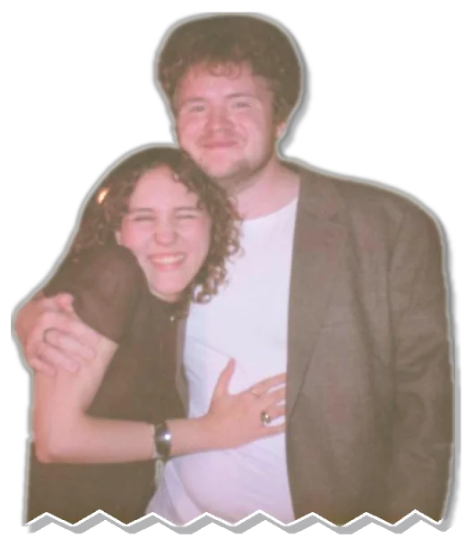
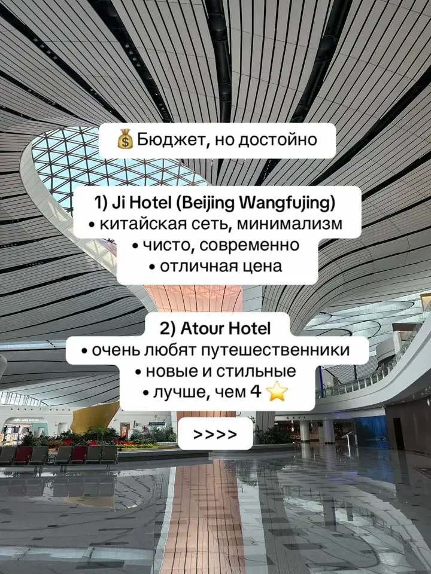
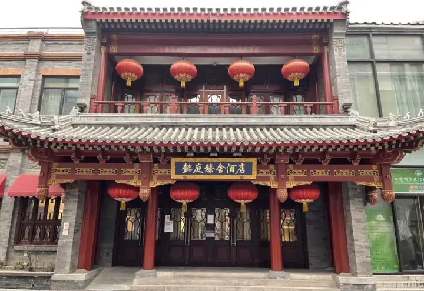
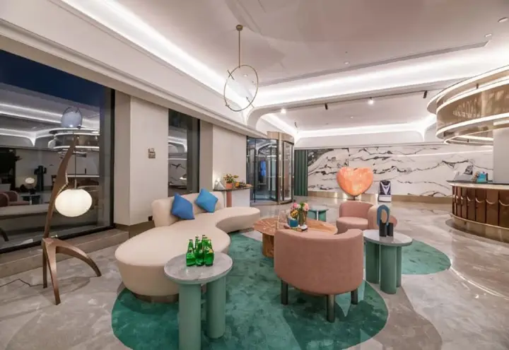
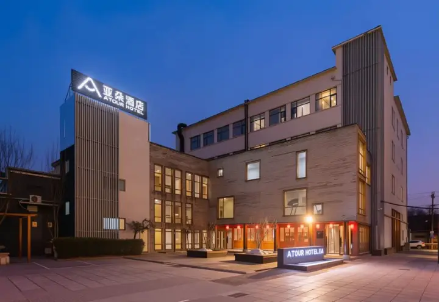
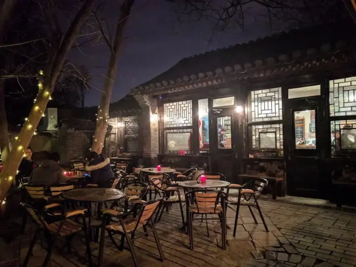
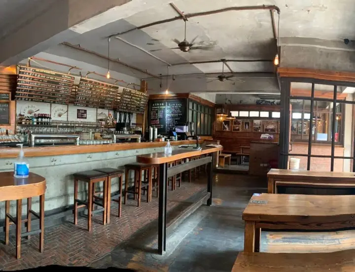
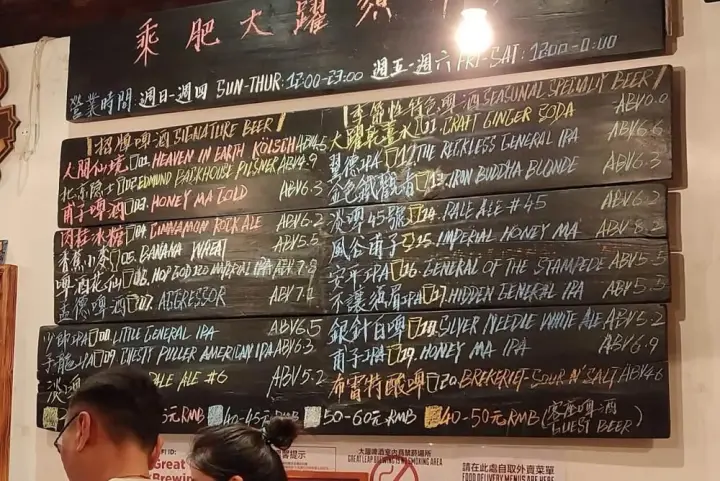
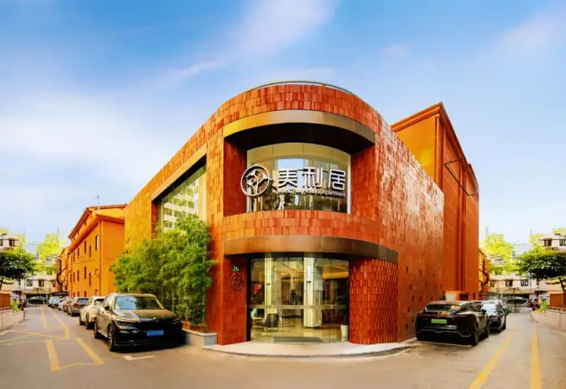
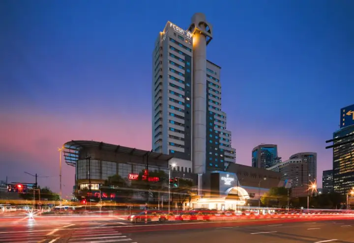
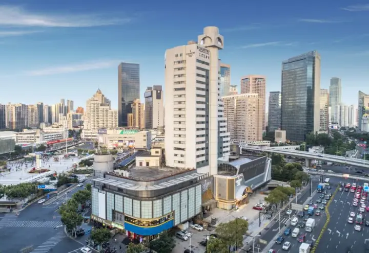
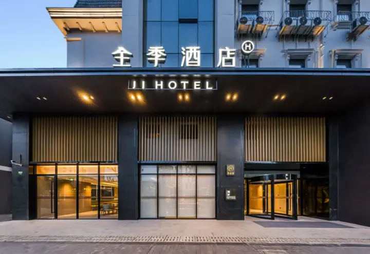
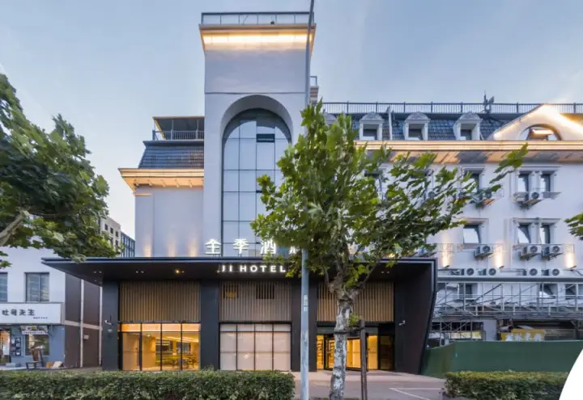
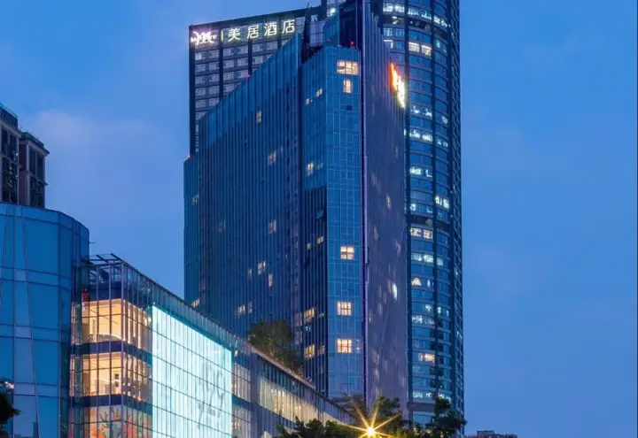
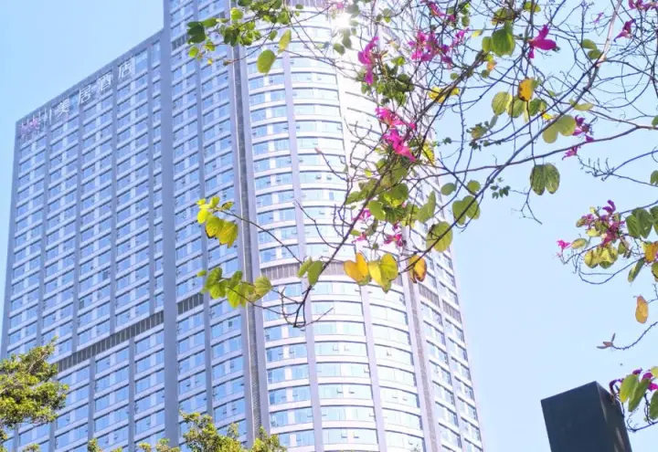
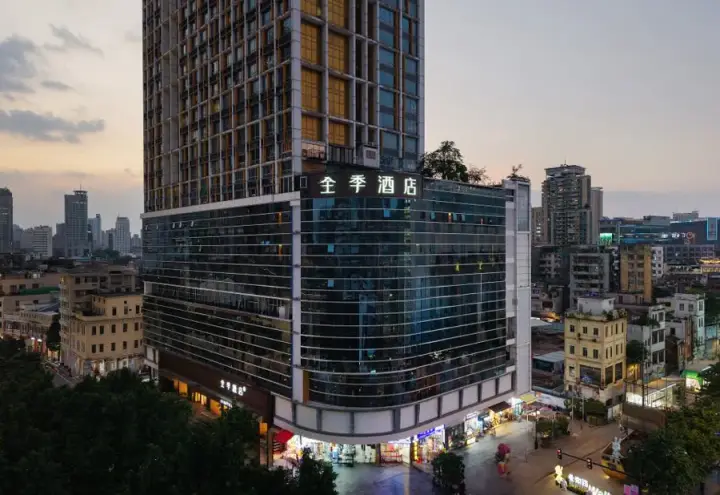
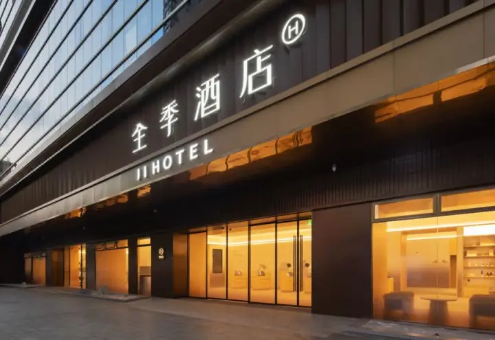
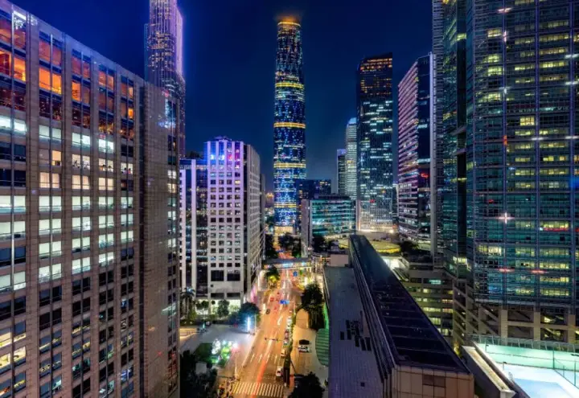
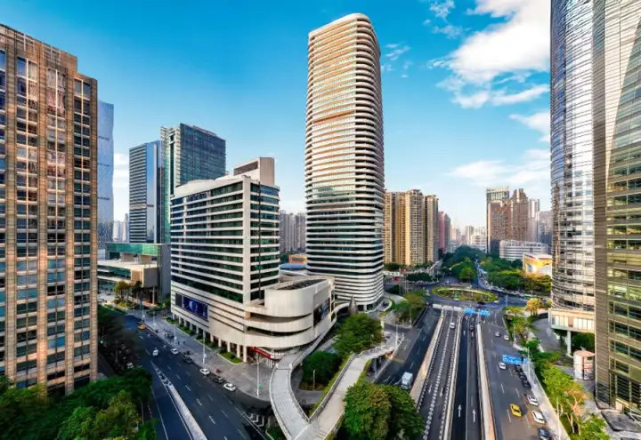
Старый город в фонарях, пляж Ан Банг в 10 минутах, лучшая еда страны. Днём море, вечером прогулка.
Чисто пляж, море, ничего не делать. Много русскоязычного, бывают прямые рейсы в Москву.
Остров, широкие пляжи, закаты, спокойно. Самый «ничего не делать» вариант.
Как считал: курсы 1 ¥ ≈ 11,5 ₽, 1 HK$ ≈ 10,7 ₽, 1 $ ≈ 83 ₽. Отели из подборок выше, за двоих с налогами, цены Trip.com на наши даты от 5 ноября 2026. Перелёты по агрегаторам на зиму, вилка «купить сейчас / купить в декабре». Еда по вилке «стритфуд и лапша» / «рестораны и бары каждый вечер». Нижняя граница — экономно, верхняя — ни в чём себе не отказывая.